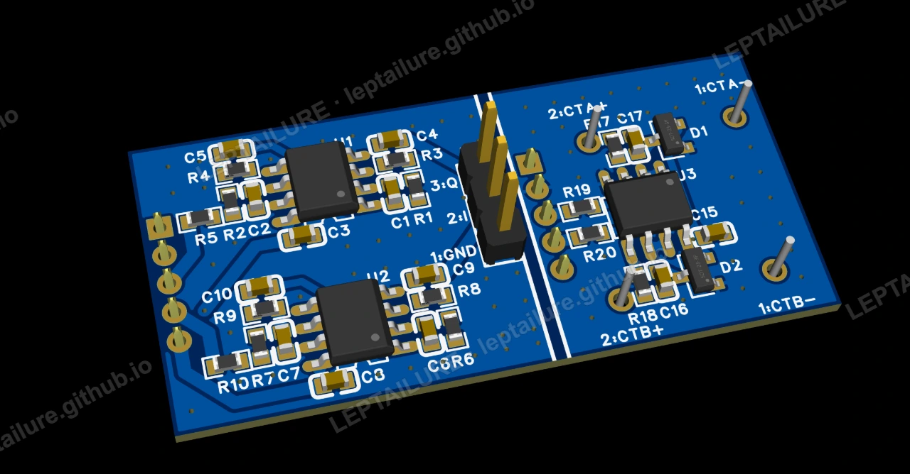

Système électromagnétique à réluctance
Modélisation, électronique de puissance et instrumentation.
J’ai assuré la conception et la réalisation de ce système à travers plusieurs versions successives, en associant simulation numérique, circuits imprimés, commande embarquée, mécanique et expérimentation.
Ansys Maxwell · Python / Optuna · PCB · IGBT · STM32 · ESP · SolidWorks
Travaux réalisés
Modélisation & optimisation
Étude électromagnétique sous Ansys Maxwell, automatisation des campagnes de simulation avec Python et optimisation multicritère avec Optuna pour comparer les configurations.
Électronique de puissance
Conception des PCB et d’une architecture de commutation à IGBT. Étude des transitoires, des surtensions, de l’isolation galvanique et des perturbations électriques.
Commande embarquée
Développement de la commande séquentielle sur STM32 et d’une interface de supervision sur ESP-01S ou ESP32 selon les versions ; intégration des capteurs.
Conception électromécanique
Modélisation sous SolidWorks, fabrication des bobinages, prototypage, assemblage et intégration des sous-ensembles mécaniques et électroniques.
Instrumentation expérimentale
Mise en place de mesures à l’oscilloscope et d’une instrumentation associant un radar à 24 GHz et des capteurs de courant à effet Hall pour caractériser le prototype.
Développement itératif
Analyse des résultats numériques et des observations expérimentales, révision des choix de conception et évaluation des modifications au fil des versions.
Carte de commande — 26R1
Vue du routage de la carte de commande embarquée, révision 26R1.

Fabrication et essais
Photographies des étapes de réalisation et observations expérimentales.


Les photographies et oscillogrammes documentent les différentes versions et leurs essais. Les relevés sont des observations expérimentales ; ils ne constituent pas, à eux seuls, une qualification normalisée du système.
Capteurs 26R2 · Radar Doppler
Le module de capteurs de la 26R2 vise à suivre le mobile pendant les phases d’accélération et de décélération. Le radar Doppler renseigne sa vitesse. L’estimation de sa position relative et la précision du suivi restent à vérifier sur banc.
La mesure centralisée vise à réduire le nombre de capteurs infrarouges répartis le long du trajet et à libérer de la place pour l’intégration. Son effet sur le coût reste à évaluer. La surveillance du mouvement dans les transports ferroviaires constitue une piste d’application.
État du projet. Calculs, conception et routage du circuit imprimé terminés. Validation expérimentale à venir.
